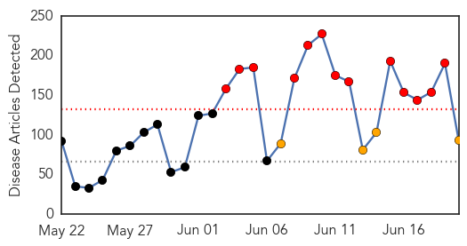
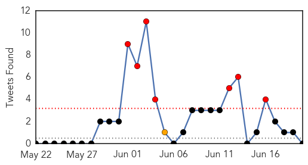

30 Day Trends
Web: 13 alerts, 4 warnings
Twitter: 7 alerts, 1 warnings
Top Articles:
- 1.000
- WHO chief voices optimism over S. Korea MERS outbreak
- 0.999
- Thailand confirms first MERS case as virus spreads in Asia
- 0.999
- South Korea Reports No New MERS Cases
- 0.999
- No new MERS cases for first time in 16 days
- 0.999
- Coping With Outbreaks of MERS
- 0.999
- S. Korea reports no new MERS cases for first time in 16 days
- 0.999
- Korea reports no new MERS cases for first time in 16 days
- 0.999
- South Korea reports no new MERS cases for first time in 16 days
- 0.999
- South Korea reports no new MERS cases for first time in 16 days
- 0.999
- South Korea Reports No New MERS Cases
- 0.999
- Bangkok's Bumrungrad Hospital treated Thailand's first MERS case
- 0.999
- South Korea reports no new MERS infections
- 0.998
- South Korea says MERS outbreak shows signs of subsiding
- 0.998
- S. Korea reports no new MERS cases for first time in 16 days
- 0.998
- Thailand confirms its first case of deadly MERS virus
- 0.998
- Thailand says 175 exposed to MERS patient; South Korea reports no new case
- 0.997
- Thailand says 175 exposed to MERS patient, news, Health News, AsiaOne YourHealth
- 0.997
- No New MERS Cases for South Korea and Thailand on Saturday
- 0.997
- Boost for South Korea in MERS battle
- 0.997
- No daily MERS cases, deaths added in S. Korea
- 0.997
- 175 exposed to Thailand's only MERS case
- 0.997
- Thailand reports first confirmed case of deadly MERS virus
- 0.997
- Boost for South Korea in MERS battle
- 0.997
- Ho Chi Minh City sets up 33 mobile teams to cope with MERS
- 0.997
- Thailand says 175 exposed to MERS patient; South Korea reports no new case
- 0.997
- Thailand says 175 exposed to MERS patient; S.Korea reports no new case
- 0.997
- S Korea says MERS outbreak shows signs of subsiding
- 0.996
- S Korea says MERS outbreak shows signs of subsiding
- 0.996
- S. Korea reports no new MERS cases for first time in 16 days
- 0.995
- Thailand says 175 people had exposure to its MERS case
- 0.994
- Thailand says 175 people had exposure to its MERS case
- 0.993
- Omani MERS patient's relatives tested for virus in Thailand
- 0.993
- Slinking Toward Retirement
- 0.992
- Boost for South Korea in MERS battle
- 0.992
- South Korea, Thailand Report No New MERS Cases : The Two-Way : NPR
- 0.992
- South Korea, Thailand Report No New MERS Cases
- 0.991
- Thailand says 175 people had exposure to its MERS case
- 0.990
- Four days to confirm MERS - Regional
- 0.990
- We need to draw up a new quarantine system to better cope with MERS
- 0.985
- Thailand confident of preventing mass MERS outbreak
- 0.985
- Thailand Took Four Days to Confirm First MERS Case; Scores Monitored
- 0.984
- First MERS Case In Thailand Confirmed
- 0.983
- DISCUSSING MERS VIRUS
- 0.982
- MERS Thailand – 175 people exposed to MERS – Says Thailand Health Ministry
- 0.979
- 175 people exposed to MERS
- 0.978
- Gulf Daily News World News Relatives of Omani Mers victim tested
- 0.978
- Thailand MERS Case, Health Public Minister Confirms
- 0.975
- Bangkok's Bumrungrad Hospital quarantines 58 staff , Others news, Health News, AsiaOne YourHealth
- 0.959
- Read Health News & Articles at TheHealthSite.com
- 0.957
- Thailand: 175 Exposed to MERS Case
Showing top 50 articles...
Top Tweets:
-
No tweets found for Jun 20, 2015
Web/News Articles
Tweets
Article Locations